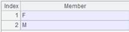
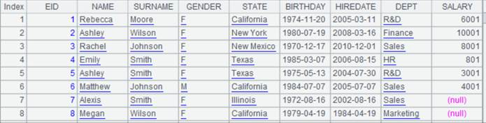
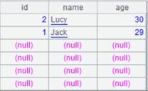
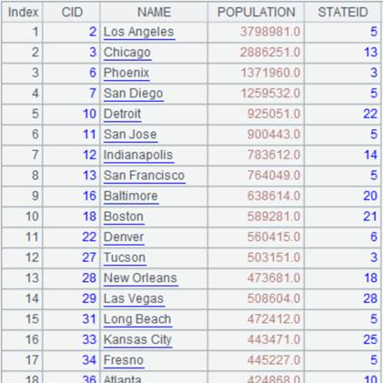
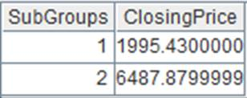
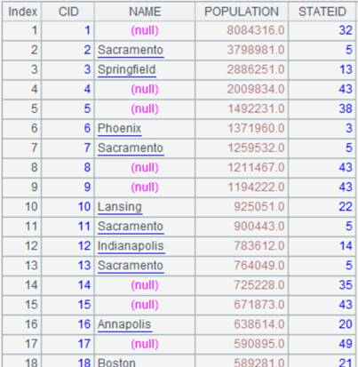
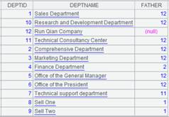

Description:
A foreign-key-style join between an in-memory table and a table sequence or two in-memory tables.
T.join(C:., Ai:K,x:F,¡; ¡;¡)
Note:
The function finds eligible records from table sequence or in-memory table Ai by matching C,¡ field of in-memory table T with the latter¡¯s key, adds Ai¡¯s expression x to T as a field
K can be omitted or represented by #. When omitted, K is Ai¡¯s key by default; when written as #, K is the ordinal number of a record of table Ai, which means foreign key numberization. Simply put, primary key values of the dimension table are natural numbers starting from 1, which are row numbers corresponding to table records. In this case, we can directly locate dimension table records according to key values by row numbers. This helps speed up association with the dimension table and increase performance.
If there is an F field in Ai, just modify the existing field of ch. Use the latest time calculated through now() when time key value is not specified.
Option:
|
@i |
Delete records of T that cannot match the foreign key, and by default, will record corresponding values as nulls. When parameters x:F are absent, just perform the fileting on T |
|
@o(F;¡) |
Use the original records of Ai as a new field F to generate new records; here x is equivalent to ~ |
|
@d |
Delete records of T that match the foreign key when parameters x:F are absent, which is equivalent to performing fileting on T |
|
@k |
When x is represented by ~, record the correspondence relationship between F and C,¡in the result set to identify the foreign key for a pre-association |
|
@m |
Use MERGE method to compute when T is ordered by C and Ai is ordered by K |
Parameter:
|
T |
An in-memory table |
|
C |
T¡¯s foreign key; use colon to separate multiple fields of a composite foreign key |
|
Ai |
A table sequence or an in-memory table |
|
K |
Ai¡¯s key |
|
x |
Expression of an Ai¡¯s field |
|
F |
Field name of expression x |
Return value:
A table sequence
Example:
|
|
A |
|
|
1 |
=connect("demo").cursor("SELECT * FROM CITIES").memory() |
Return an in-memory table; below is data of CITIES table:  |
|
2 |
=connect("demo").query("SELECT * FROM STATECAPITAL where STATEID<30").keys(STATEID) |
Below is data of STATECAPITAL table:
|
|
3 |
=A1.join(STATEID,A2,CAPITAL) |
Associate CITIES table and STATECAPITAL table through the foreign key – parameter K is by default STATEID, STATECAPITAL¡¯s key, and add STATECAPITAL table¡¯s CAPTITALfield to result to generate a new table sequence  |
|
4 |
=A1.join(STATEID,A2:#,CAPITAL) |
STATEID field values are natural numbers starting from 1, which correspond to ordinal numbers of records of STATECAPITAL table, so we can write parameter K as # to use ordinal numbers in STATECAPITAL table so that efficiency can be boosted; return same result as A3 |
|
5 |
=A1.join@i(STATEID,A2,CAPITAL) |
Use @i option to delete records where foreign key values are non-matching; by default write the records as nulls  |
|
6 |
=A1.join@i(STATEID,A2) |
Use @i option to perform filtering only on CITIES table when parameters x:F are absent  |
|
7 |
=A1.join@d(STATEID,A2) |
Use @d option to delete records matching the foreign key when parameters x:F are absent and perform filtering only on CITIES table
|
|
8 |
=A1.join(STATEID,A2,abc) |
Write a record as null when parameter x cannot be found in A2  |
|
9 |
=A1.join@k(STATEID,A2,~:STATES) |
Use @k option to record correspondence relationship between STATES and STATEID in result table sequence to identify foreign key for pre-association when parameter x is written as ~
|
|
10 |
=A1.join@o(cities;STATEID,A2,CAPITAL) |
Use @o option to make the whole original record cities value to generate a new record; this is equivalent to writing parameter x as ~
|
|
11 |
=A1.join(STATEID,A2,CAPITAL:NAME) |
Modify the existing field as NAME already exists in CITIES table  |


Perform the JOIN through MERGE method:
|
|
A |
|
|
1 |
=connect("demo").cursor("SELECT * FROM CITIES").sortx(STATEID).memory() |
Return an in-memory table; below is data of CITIES table:  |
|
2 |
=connect("demo").query("SELECT * FROM STATECAPITAL where STATEID<30").keys(STATEID).sort(STATEID) |
Below is data of STATECAPITAL table:
|
|
3 |
=A1.join@m(STATEID,A2,CAPITAL) |
Use MERGE method to compute as CITIES table is ordered by STATEID and STATECAPITAL table is ordered by parameter K
|